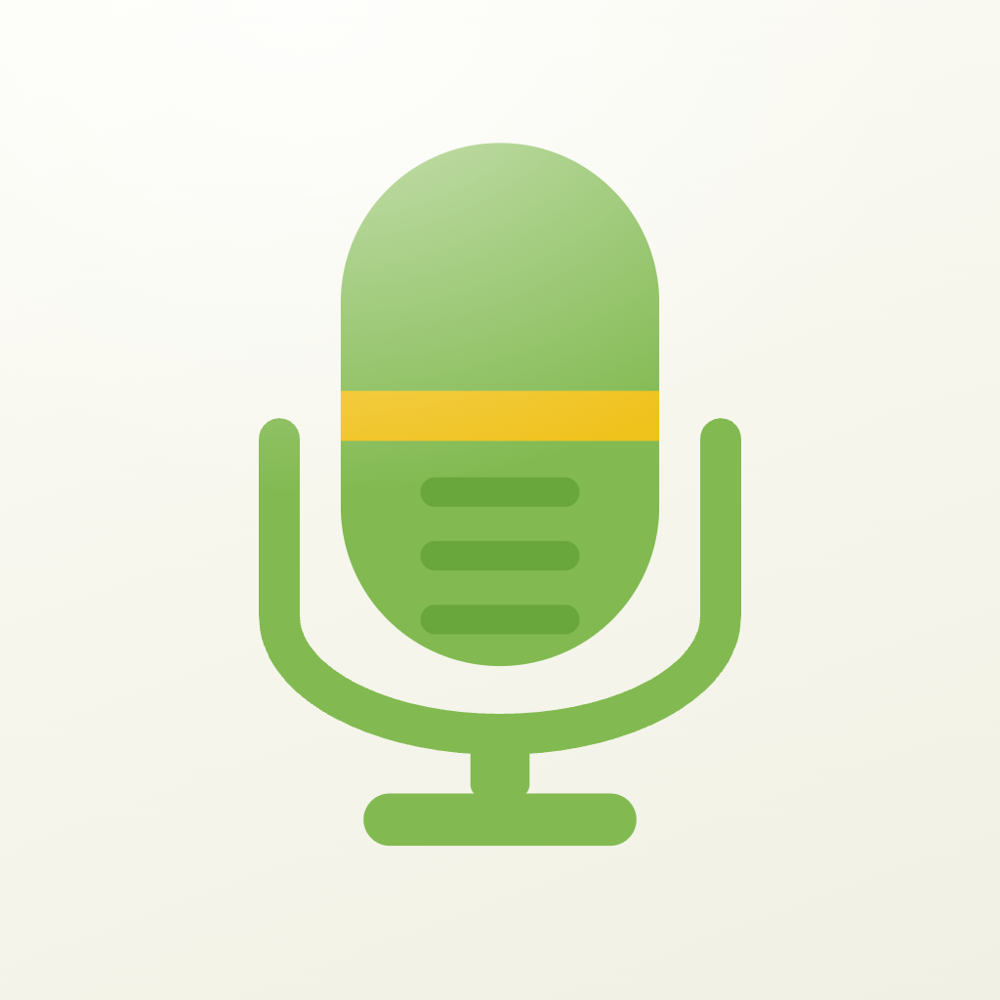
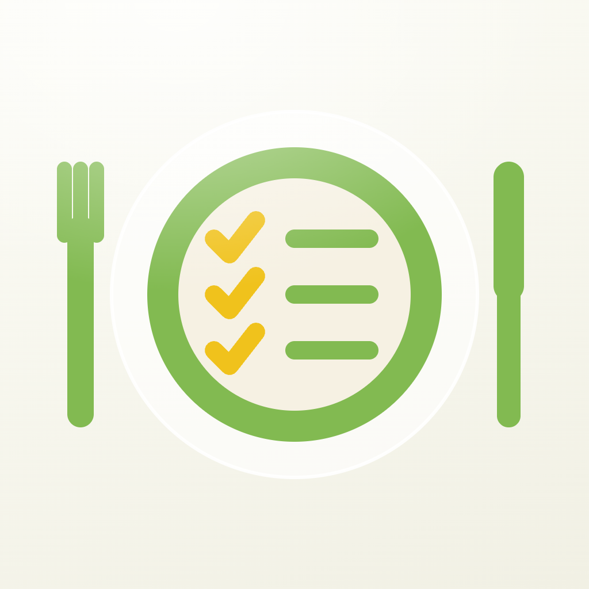

Turn 15 · Meal Planner, no fork
Draw the job, not the cutlery.
The app is choose the week, buy the shopping, cook the meals. So: the bag you carry, the pot you cook in, or the plate you already own — each one solid green with cream cut into it, and a tick where the app's verb is. No cutlery, nothing bleeding, two values.
15a
The bag, listed
A shopping bag with the list cut into it in cream, top line ticked. Covers two thirds of the app in one shape and has real mass at 29pt.
15b
The pot, ticked
Lid, knob, body, one cream tick struck through it. Heaviest silhouette of the three — closest in weight to the mic — and it says cooking without saying recipe app.
15c
Your plate, cleaned up
The icon you already ship, minus the cutlery and the gold: green rim, cream plate, the week ticked on it in green. Keeps five years of recognition and drops the bleed.
Against the set, 60pt
Bag, pot, plate against the mic, the jar and Riverly. My pick is the pot: it matches the set's mass, it is the only one of the three that could not be any other app, and the tick carries the planning. The plate is the safe answer if recognition matters more than a fresh start.
Turn 14 · the fork as the tick — rejected
The handle bends, and the fork becomes the tick.
One object doing both jobs with nothing added: the handle turns at the heel to make the tick's short arm, the long arm rises, and the tines splay off the end of it. Food and planned in a single silhouette, and it is the only Meal Planner option so far that needs no second element at all.
14a
Bent fork, cream band
Keeps the mic's cream band across the handle, so it still declares itself part of the set. The band also breaks the long arm, which slightly weakens the tick.
14b
Bent fork, no band
Pure silhouette, one colour. Strongest tick of the two and cleanest at 29pt; the cost is that it is the only icon in the set with no cream in it.
Against the set, 60pt
The diagonal is the odd one out in a row of upright objects — that is the real trade, and it may be worth it for how much the mark says.
Turn 13 · the fork, planning
Keep the fork. Make it say planned.
12b with the planning idea carried inside the object rather than added beside it — cream is still the only second value, and nothing sits outside the silhouette. 12b itself is first for comparison.
12b as-is
Food, no plan.
13a
Notched shank
The band bends into a tick. Subtlest change, best at 29pt — but it can read as a decorative notch rather than a tick.
13b
Ruled tines
Two cream rules across the tines turn the head into a ruled week while the shape stays a fork. Reads as a schedule at 160pt; the rules merge into the tines by 29pt.
13c
Ticked head
A full cream tick struck through the head, band kept on the shank. Unambiguously "meal, ticked off" — my pick, and the only one that says planning at 40pt.
Turn 12 · Meal Planner
The plate was an emblem. These are glyphs.
The shipping plate is a disc with cutlery bleeding off both edges — the last emblem in the set, and the one thing still breaking 4b. Three replacements, each one solid upright object in green with cream cut out of it, nothing outside the silhouette, no third colour. Family strip underneath: judge them next to the mic, the jar and Riverly at 60pt.
12a
The week, ticked
An upright card with three cream rules, the top one ticked and shortened. Says planning outright and holds to 29pt, but nothing in it says food.
12b
The fork, mic-style
Structurally the mic: solid object, one cream band across the shank. Truest sibling in the set and instantly food — but it is a cutlery icon, which is what every recipe app uses.
12c
Fork cut from the card
One object carrying both ideas: the card is the plan, the fork is cut out of it in cream, and a small tick sits in the corner. My pick — most specific to what the app is, and the silhouette is a card so it fills the tile.
The set at 60pt — 12a, 12b, 12c against the other three
UnJumble, UnPickle and Riverly (11b) on the right. The two card options match their mass; the fork is lighter than everything else in the row, which is worth knowing before you pick it.
Turn 11 · ticks or ring — 11b final
Same boat, same letters. Ticks or arcs.
Identical hull, outboard and N/S pair in both — the only variable is what marks east and west: two short ticks, or 9c's pair of arcs. Shown at 220, 60, 40 and 29pt.
11a
Ticks — 10c as chosen
The boat is the only large shape in the tile; the compass is four small marks around it. Reads as a vessel on a bearing, and at 29pt it is a boat that happens to have specks around it — the mark degrades gracefully.
11b
Arcs — 9c with the outboard and N/S
The arcs close the composition and make it read as an instrument dial with the boat as its needle — more premium at 220pt, and the letters now sit in the ring's own gaps rather than floating. Two costs: it implies a container, which is what 4b ruled out for the other three, and at 29pt the arcs thicken into a partial circle that competes with the hull.
Turn 10 · 9a, named and with an outboard — 10c chosen
A stern outboard, and the bearing named.
The hull now has an outboard and skeg hanging off the stern in deep blue — that one shape is what makes it a boat rather than a pill, and it also tells you which end is the bow. Letters are the platform sans at 600, same family as everything else, in deep blue. Three amounts of compass, since letters are the first thing to fail at 29pt.
10a
North named, the rest ticks
One letter is enough to make the other three marks read as a compass — the eye supplies E, S and W. My pick: it is the only one of the three where the boat is still the loudest thing in the tile at 60pt.
10b
All four named
Unmistakably a compass rose, and the closest to a marine instrument. Cost: four letters at the tile edge crowd the hull, and below 40pt they turn to grey mush — which is worse than having no compass at all.
10c
North and south named
The vertical axis named, the horizontal left as ticks: reads as a heading up the page — the middle option, and the one that survives 40pt best of the two lettered versions.
Turn 9 · Riverly, mic-style boat
One solid object, one cream band — plus a compass.
Built to UnJumble's rule exactly: a single upright object, centred, in the app's colour, with one cream band cut straight through it. The mic is shown first for reference. Then three ways to add the compass, in deep blue so no fourth value appears.
Reference
UnJumble: solid body, one cream band, everything else the same colour.
9a
Compass ticks around the hull
Four cardinal marks, north longest and directly off the bow, so the boat is sighted on a bearing. Quietest of the three and the closest sibling to the mic — the ticks are the first thing to go at 29pt, which is fine because the hull still points.
9b
The foredeck is the needle
The split cream-and-deep needle sits inside the bow, so the boat contains its own compass rather than wearing one. My pick: nothing is added outside the silhouette, and it survives 29pt because the needle is inside the mass.
9c
Boat over a broken compass ring
Two arcs and a north triangle behind the hull. Says "instrument" loudest, but it reintroduces a container by implication — a ring is a disc with the middle taken out, which is the argument 4b just won.
Turn 8 · Riverly, your composition
The icon you ship, with the boat where the buoy was.
Your disc, your glass ring, your cream river and its branch, the two wake ripples — all at the original coordinates. The only change is that the buoy becomes the narrowboat seen from above, riding the bend, so the boat is the heading indicator. On 6a's light wash.
8a
Boat on your river disc
Blue hull on the cream river with a cream cabin and deep-blue hatches, angled 29° up the bend exactly where the buoy sat. Note the honest tension: this keeps Riverly an emblem while the other three are glyphs, which is the one thing 4b was meant to settle. Worth it if the river scene is Riverly's identity — it is the most recognisable of everything drawn so far.
8b
The same scene, no disc
Same idea inside 4b's rule: the river is the object, drawn straight on the washed field with no container, and the boat is cut out of it in cream. Consistent with UnJumble, Meal Planner and UnPickle; less of the chart-window character.
Turn 7 · Riverly, boat as pointer
A hull and a map pointer are the same shape.
The narrowboat seen from above — pointed bow, parallel sides, square stern — is already a heading indicator, so the boat can be the pointer without becoming an arrow. One hull, drawn once, rotated onto whatever bearing the mark needs. All three on 6a's light wash.
7a
Boat on the river
Cream hull cut out of the blue river, cabin in the river's own colour, bow deck in deep blue. The whole boat is there and it is unmistakably pointing up the bend. Strongest at 29pt because the ribbon fills the tile.
7b
Boat as the pointer
No river channel — a blue hull on the washed field with two waves beneath, reading as a heading marker on a chart. Biggest boat of the three and the closest silhouette match to UnJumble's mic, but it says "boat" louder than "river".
7c
Boat, with the route behind
The river drops back to a faint channel with a dashed centreline, and the boat sits over it bow-up. Most literally a navigation app; the faint ribbon is a third value, and it is the first thing lost at 29pt.
Turn 6 · tinted fields — 6a chosen
The field takes the colour too.
Same 160° axis and the same baked gloss as the house field — only the two stops change, to a wash of the app's own colour. Three strengths, all four apps, with Riverly on 5b. Judge them as a set of four at 60pt, not one at a time: that is how they are actually seen.
6a
Light wash — the in-app field, exactly
The icon and the app's first screen are now literally the same background. Reads as warm daylight rather than as colour — you have to hold two side by side to see the tint at all, which is either restraint or a wasted move depending on your taste.
6b
Mid wash — the accent-wash token
The field is the same value as the app's quiet button and active tab pill, so the tile is recognisably that app's colour at a glance while the subject still carries the saturation. My pick: it reads as a deliberate family of four at 60pt, and the two greens stay apart because the marks differ in weight.
6c
Strong tint — a step past the token set
Loudest, and the honest cost is contrast: the subject and its own field are now close in value, so UnJumble's coral mic and Riverly's blue ribbon lose some of their edge at 29pt. It also needs a thirteenth and fourteenth value per app, since these two stops are outside the six tokens.
What the tint costs elsewhere
Two knock-ons if we take 6b or 6c. The negative space inside a mark — UnJumble's band, UnPickle's ribs, Riverly's centreline — stays cream, so it now reads as a lighter cut-out against a coloured field rather than as the page showing through; that is a nicer effect but it means cream is doing a second job. And the App Store screenshots currently sit on a pale accent tile, which would want to become the same wash so the listing matches the icon. Neither is hard, both should be written down.
Turn 5 · Riverly as a glyph
Navigation, without the disc.
You're right that buoy-over-waves says "water", not "navigating water". Three ways to say the second thing inside 4b's rule — no container, one object, two colours plus cream, nothing bleeding off the canvas.
5a
The route, with the buoy on it
The river becomes the object — a 150px ribbon corner to corner — and the buoy sits on it in deep blue. Closest to the icon you ship, and the strongest of the three small, because the ribbon fills the tile.
5b
The route, with a heading
A cream dashed centreline down the river and a cream arrowhead at the far end: this is the only one that says direction of travel outright. Most literally "navigation", least like the icon you have today.
5c
Buoy above the water
The mark from 4b, rebalanced: buoy bigger and higher, waves in deep blue and wider apart. Best silhouette match to UnJumble's mic, but it still reads as a marker rather than a passage.
Turn 4 · artwork style
No — right now there are two artwork languages.
Riverly and Meal Planner are emblems: a subject held inside a disc with the glass ring. UnJumble and UnPickle are glyphs: a solid object floating on the field with no container, and something bleeding off the canvas edge. While everything was green that read as variety. With four colours it reads as four studios. Stroke weights are also all over the place — 14, 24, 32, 36, 78, 86 and 186 across the four masters.
One of these two rules has to win. Both shown below at full size, nothing else changed.
4a
All emblems — Riverly's rule wins
UnJumble
Meal Planner
UnPickle
Riverly
Every subject sits inside the coloured disc, drawn in cream, wearing the glass ring. The colour becomes the field of the icon rather than the object, which is the most premium of the two and the strongest at 29pt — the disc survives when detail does not. Cost: the marks lose about a third of their drawing area, and UnPickle's zigzag gets clipped.
4b
All glyphs — UnJumble's rule wins
UnJumble
Meal Planner
UnPickle
Riverly
No containers, no glass ring: one solid object per icon on the cream field, in the app's colour. Riverly gives up its river scene and becomes the buoy over two waves — that is a real loss of character, and it is the honest cost of this route. Lighter and more app-like than 4a, weaker at 29pt because there is no filled shape holding the tile.
What else has to be written down, now that colour isn't doing the work
One container rule (4a or 4b, no mixing). One stroke ladder — I'd propose 36 for structure, 24 for detail, nothing below 20 at 1024. Nothing bleeds off the canvas edge: UnPickle's zigzag and Meal Planner's cutlery either come inside or go. Two colours per icon plus cream, never three. Glass ring only if 4a wins, and then on all four. My recommendation is 4a: it is the more premium of the two, it holds to 29pt, and it makes the disc — not the hue — the thing the four share.
Turn 3 · icons
Same marks. Same field. Each one in its own colour.
Nothing is redrawn — the microphone, the plate, the river and the jar are exactly the geometry you already ship. What changes is which colour fills the subject, so the icon on the home screen and the accent inside the app are the same colour. Gold is gone: the slot it held now takes a second value from the app's own ramp, or cream as negative space. What makes them a family is everything except colour.
3a
What holds the family together now
The field is the constant
Every light icon keeps the house field — 160° #FCFCF6 → #F1F0E4 — and the baked gloss. Four different subject colours on one identical cream plate still read as a set on a home screen.
Two values, both the app's own
Where gold used to sit — the mic's band, the plate's ticks, the buoy, the jar's label and zigzag — the mark now takes the app's second value, or cream. Two colours per icon, never three.
Uniformity is geometry, not hue
One subject weight, one optical scale, one squircle, one field, one negative-space cream, no shadow, no gradient on the subject. Four colours, one drawing hand.
Three variants, unchanged rules
Light opaque, dark transparent by design, tinted grayscale on black. 23.5% squircle, never circular, never a shadow — and the glass ring stays on the two circular marks.
3b
Today, and proposed
Today

UnJumble

Meal Planner

UnPickle

Riverly
Proposed
Coral #FF5A3C
Green #2BBF4E
Green, deep subject
Blue #1372E8
3c
The three variants, per app
UnJumble
Light, opaque
Dark, transparent
Tinted
Body and stand coral, the three grille bars accent-deep #B92F14, and the band is now cream cut straight through the body — the same negative-space cream the other three use.
Meal Planner
Light, opaque
Dark, transparent
Tinted
Plate ring and list lines in the bright #2BBF4E; the ticks take the deep #116B26, so the thing the app is for — the ticking off — is the strongest mark on the plate.
UnPickle
Light, opaque
Dark, transparent
Tinted
Same six tokens as Meal Planner, spent the other way round: a deep #116B26 jar with cream ribs, and the label and zigzag in the bright #2BBF4E. Two greens on one home screen still separate, because one is a light disc and one is a dark upright.
Riverly
Light, opaque
Dark, transparent
Tinted
The disc keeps the brighter #1372E8 you liked; the river stays cream and the buoy takes the deep #0B4E9E with cream bands. In-app the blue steps down to #0B5FD0 with a cream label, because that is where text sits on it.
3d
Down to the 29pt floor
60 pt
40 pt
29 pt
At 29pt the gold detail is the first thing to go — that is expected, and it is why the existing favicon rule (full-bleed subject, one channel, wider stroke) should now be written per app rather than once for the house. Say the word and I'll draw the four sub-32px simplifications.
Two open calls
First: whether the house green #82BA51 disappears from the icons entirely, or Riverly and UnJumble keep a green-dark hairline somewhere as a nod. My recommendation is that it goes — gold already does that job, and two greens plus a coral plus a blue is a crowd. Second: whether UnPickle inverts as shown, or takes the plate treatment and Meal Planner takes the upright. Both hold at 29pt; the inversion is the safer of the two.